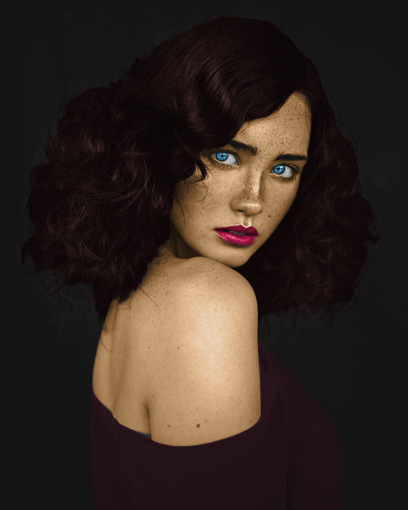
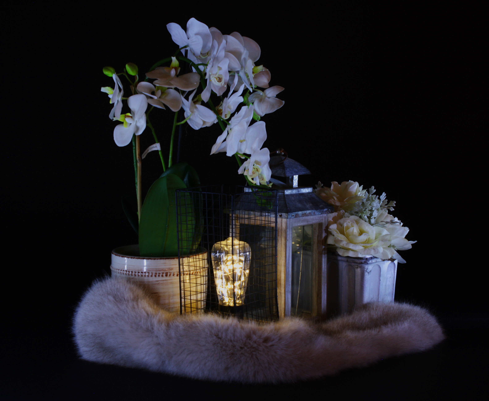

Colorizing an image in Photoshop

For this assignment, I took a reference image of a model and added dramatic and custom colors to it as shown below

The colors were oversaturated on purpose to add a pleasing and exxagerated aesthethic
Light Painting Still Life
Photograph of a still life image in a pitch black room, lighted by a flashlight
Splash Photo

A photo taken of a dropped ball in water, perfectly timed